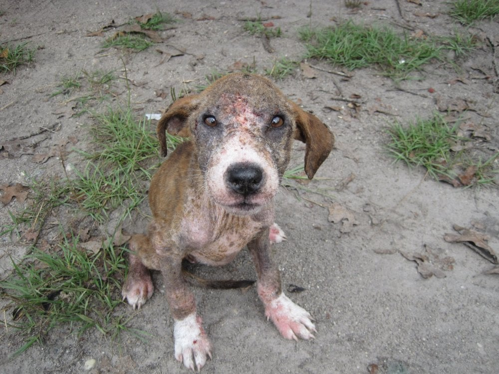

Animal hoarder ( also known as Noah Syndrome ) is an illness in which an individual keeps a large amount of animals without providing them with basic necessities like food, water, and a sanitary place to live. Animals are frequently kept in small cages, which allows hoarders to acquire an excessive number of animals without basic necessities. As a result, hundreds or even thousands of animals that have been found have starved to death or become ill due to hoarders who operate under the disguise of "rescues" or "shelters."
https://www.peta.org.uk/issues/animals-not-abuse/cruelty-to-animals/